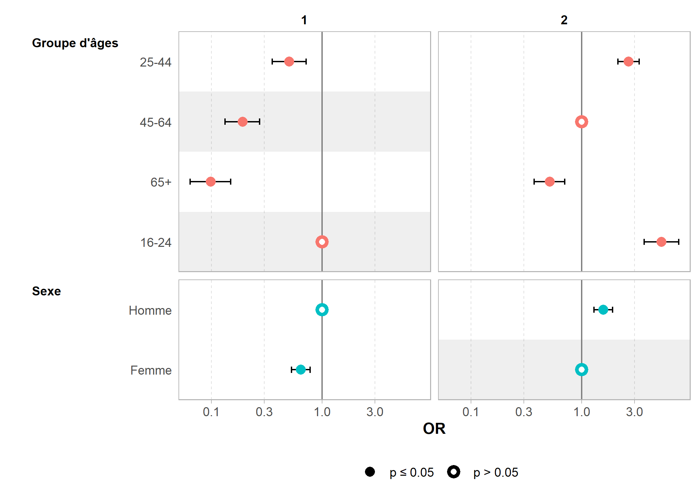

Les contrastes (codage des variables catégorielles dans un modèle)
Dans les modèles de régression (modèles linéaires ou modèles linéaires généralisés comme la régression logistique), une transformation des variables catégorielles est nécessaire pour qu’elles puissent être prises en compte dans le modèle. On va dès lors définir des contrastes.
De manière générale, une variable catégorielle à n modalités va être transformée en n-1 variables quantitatives. Il existe cependant plusieurs manières de faire (i.e. plusieurs types de contrastes). Et, selon les contrastes choisis, les coefficients du modèles ne s’interpréteront pas de la même manière.
Contrastes de type traitement
Par défaut, R applique des contrastes de type traitement
pour un facteur non ordonné. Il s’agit notamment des contrastes utilisés dans le chapitre sur la régression logistique.
Exemple 1 : un modèle linéaire avec une variable catégorielle
Commençons avec un premier exemple que nous allons calculer avec le jeu de données trial chargé en mémoire lorsque l’on appelle l’extension gtsummary. Ce jeu de données contient les observations de 200 patients. Nous nous intéressons à deux variables en particulier : marker une variable numérique correspondant à un marqueur biologique et grade un facteur à trois modalités correspondant à différent groupes de patients.
Regardons la moyenne de marker pour chaque valeur de grade.
library(gtsummary)
trial %>%
select(marker, grade) %>%
tbl_summary(
by = grade,
statistic = marker ~ "{mean}",
digits = marker ~ 4
) %>%
add_overall(last = TRUE)| Characteristic | I, N = 681 | II, N = 681 | III, N = 641 | Overall, N = 2001 |
|---|---|---|---|---|
| Marker Level (ng/mL) | 1.0669 | 0.6805 | 0.9958 | 0.9160 |
| Unknown | 2 | 5 | 3 | 10 |
|
1
Mean
|
||||
Utilisons maintenant une régression linaire pour modéliser la valeur de marker en fonction de grade.
mod <- lm(marker ~ grade, data = trial)
mod
Call:
lm(formula = marker ~ grade, data = trial)
Coefficients:
(Intercept) gradeII gradeIII
1.0669 -0.3864 -0.0711 Le modèle obtenu contient trois coefficients ou termes : un intercept et deux termes associés à la variable grade.
Pour bien interpréter ces coefficients, il faut comprendre comment la variable grade a été transformée avant d’être inclue dans le modèle. Nous pouvons voir cela avec la fonction contrasts.
contrasts(trial$grade) II III
I 0 0
II 1 0
III 0 1Ce que nous montre cette matrice, c’est que la variable catégorielle grade à 3 modalités a été transformée en 2 variables binaires que l’on retrouve sous les noms de gradeII et gradeIII dans le modèle : gradeII vaut 1 si grade est égal à II et 0 sinon; gradeIII vaut 1 si grade est égal à III et 0 sinon. Si grade est égal à I, alors gradeII et gradeIII valent 0.
Il s’agit ici d’un contraste dit de traitement
ou la première modalité joue ici le rôle de modalité de référence.
Dans ce modèle linéaire, la valeur de l’intercept correspond à la moyenne de marker lorsque nous nous trouvons à la référence, donc quand grade est égal à I dans cet exemple. Et nous pouvons le constater dans notre tableau précédent des moyennes, 1.0669 correspond bien à la moyenne de marker pour la modalité I.
La valeur du coefficient associé à markerII correspond à l’écart par rapport à la référence lorsque marker est égal à II. Autrement dit, la moyenne de marker pour la modalité II correspond à la somme de l’intercept et du coefficient markerII. Et nous retrouvons bien la relation suivante : 0.6805 = 1.0669 + -0.3864. De même, la moyenne de marker lorsque grade vaut III est égale à la somme de l’intercept et du terme markerIII.
Lorsqu’on utilise des contrastes de type traitement, chaque terme du modèle peut être associé à une et une seule modalité d’origine de la variable catégorielle. Dès lors, il est possible de rajouter la modalité de référence lorsque l’on présente les résultats et on peut même lui associer la valeurs 0, ce qui peut être fait avec tbl_regression de l’extension gtsummary avec l’option add_estimate_to_reference_rows = TRUE.
mod %>%
tbl_regression(
intercept = TRUE,
add_estimate_to_reference_rows = TRUE
)| Characteristic | Beta | 95% CI1 | p-value |
|---|---|---|---|
| (Intercept) | 1.1 | 0.86, 1.3 | <0.001 |
| Grade | |||
| I | 0.00 | — | |
| II | -0.39 | -0.68, -0.09 | 0.010 |
| III | -0.07 | -0.37, 0.23 | 0.6 |
|
1
CI = Confidence Interval
|
|||
Exemple 2 : une régression logistique avec deux variables catégorielles
Pour ce deuxème exemple, nous allons utiliser le jeu de données hdv2003 fourni par l’extension questionr et recoder la variable age en groupes d’âges à 4 modalités.
library(questionr)
data("hdv2003")
library(tidyverse)hdv2003 <- hdv2003 %>%
mutate(
groupe_age = cut(
age,
c(16, 25, 45, 65, 99),
right = FALSE,
include.lowest = TRUE
) %>%
fct_recode(
"16-24" = "[16,25)",
"25-44" = "[25,45)",
"45-64" = "[45,65)",
"65+" = "[65,99]"
)
) %>%
labelled::set_variable_labels(
groupe_age = "Groupe d'âges",
sexe = "Sexe"
)Nous allons faire une régression logistique binaire pour investiguer l’effet du sexe (variable à 2 modalités) et du groupe d’âges (variable à 4 modalités) sur la pratique du sport.
mod <- glm(sport ~ sexe + groupe_age, family = binomial, data = hdv2003)
mod
Call: glm(formula = sport ~ sexe + groupe_age, family = binomial, data = hdv2003)
Coefficients:
(Intercept) sexeFemme groupe_age25-44
0.9021 -0.4455 -0.6845
groupe_age45-64 groupe_age65+
-1.6535 -2.3198
Degrees of Freedom: 1999 Total (i.e. Null); 1995 Residual
Null Deviance: 2617
Residual Deviance: 2385 AIC: 2395Le modèle contient 5 termes : 1 intercept, 1 coefficient pour la variable sexe et 3 coefficients pour la variable groupe_age. Comme précédent, nous pouvons constater que les variables à n modalités sont remplacées par défaut (contrastes de type traitement) par n-1 variables binaires, la première modalité jouant à chaque fois le rôle de modalité de référence.
contrasts(hdv2003$sexe) Femme
Homme 0
Femme 1contrasts(hdv2003$groupe_age) 25-44 45-64 65+
16-24 0 0 0
25-44 1 0 0
45-64 0 1 0
65+ 0 0 1L’intercept correspond donc à la situation à la référence, c’est-à-dire à la prédiction du modèle pour les hommes (référence de sexe) âgés de 16 à 24 ans (référence de groupe_age).
Il est possible d’exprimer cela en termes de probabilité en utilisant l’inverse de la fonction logit (puisque nous avons utilisé un modèle logit).
inv_logit <- binomial("logit")$linkinv
inv_logit(0.9021)[1] 0.7113809Selon le modèle, les hommes âgés de 16 à 24 ans ont donc 71% de chance de pratiquer du sport.
Regardons maintenant le coefficient associé à sexeFemme (-0.4455) : il représente (pour la modalité de référence des autres variables, soit pour les 16-24 ans ici) la correction à appliquer à l’intercept pour obtenir la probabilité de faire du sport. Il s’agit donc de la différence entre les femmes et les hommes pour le groupe des 16-24 ans.
inv_logit(0.9021 - 0.4455)[1] 0.6122073Autrement dit, selon le modèle, la probabilité de faire du sport pour une femme âgée de 16 à 24 ans est de 61%. On peut représenter cela avec la fonction ggpredict de ggeffects, qui représente les prédictions d’une variable, toutes les autres variables étant à la référence.
library(ggeffects, quietly = TRUE)
ggpredict(mod, "sexe") %>% plot()Bien souvent, pour une régression logistique, on préfère représenter les exponentielles des coefficients qui correspondent à des odds ratios.
mod %>%
tbl_regression(
exponentiate = TRUE,
intercept = TRUE,
add_estimate_to_reference_rows = TRUE
)Warning: The `.dots` argument of `group_by()` is deprecated
as of dplyr 1.0.0.| Characteristic | OR1 | 95% CI1 | p-value |
|---|---|---|---|
| (Intercept) | 2.46 | 1.76, 3.48 | <0.001 |
| Sexe | |||
| Homme | 1.00 | — | |
| Femme | 0.64 | 0.53, 0.78 | <0.001 |
| Groupe d'âges | |||
| 16-24 | 1.00 | — | |
| 25-44 | 0.50 | 0.35, 0.71 | <0.001 |
| 45-64 | 0.19 | 0.13, 0.27 | <0.001 |
| 65+ | 0.10 | 0.06, 0.15 | <0.001 |
|
1
OR = Odds Ratio, CI = Confidence Interval
|
|||
Or, 0,64 correspond bien à l’odds ratio entre 61% et 71% (que l’on peut calculer avec odds.ratio de questionr).
odds.ratio(0.6122, 0.7114)[1] 0.6404246De la même manière, les différents coefficients associés à groupe_age correspondent à la différence entre chaque groupe d’âges et sa modalité de référence (ici 16-24 ans), quand les autres variables (ici le sexe) sont à leur référence (ici les hommes).
Pour prédire la probabilité de faire du sport pour un profil particulier, il faut prendre en compte toutes les termes qui s’appliquent et qui s’ajoutent à l’intercept. Par exemple, pour une femme de 50 ans il faut considérer l’intercept (0.9021), le coefficient sexeFemme (-0.4455) et le coefficient groupe_age45-64 (-1.6535). Sa probabilité de faire du sport est donc de 23%.
inv_logit(0.9021 - 0.4455 - 1.6535)[1] 0.2320271Changer la modalité de référence
Il est possible de personnaliser les contrastes à utiliser et avoir un recours à un contraste de type traitement
mais en utilisant une autre modalité que la première comme référence, avec la fonction contr.treatment. Le premier argument de la fonction corresponds au nombre de modalités de la variable et le paramètre base permets de spécifier la modalité de référence (1 par défaut).
contr.treatment(4, base = 2) 1 3 4
1 1 0 0
2 0 0 0
3 0 1 0
4 0 0 1contr.SAS permets de spécifier un contraste de type traitement
dont la modalité de référence est la dernière.
contr.SAS(4) 1 2 3
1 1 0 0
2 0 1 0
3 0 0 1
4 0 0 0Les contrastes peuvent être modifiés de deux manières : au moment de la construction du modèle (via l’option contrasts) ou comme attribut des variables (via la fonction contrasts).
contrasts(hdv2003$sexe) <- contr.SAS(2)
mod2 <- glm(
sport ~ sexe + groupe_age,
family = binomial,
data = hdv2003,
contrasts = list(groupe_age = contr.treatment(4, 3))
)
mod2 %>% tbl_regression(exponentiate = TRUE, intercept = TRUE)| Characteristic | OR1 | 95% CI1 | p-value |
|---|---|---|---|
| (Intercept) | 0.30 | 0.25, 0.36 | <0.001 |
| Sexe | |||
| Homme | 1.56 | 1.29, 1.90 | <0.001 |
| Femme | — | — | |
| Groupe d'âges | |||
| 16-24 | 5.23 | 3.67, 7.52 | <0.001 |
| 25-44 | 2.64 | 2.12, 3.29 | <0.001 |
| 45-64 | — | — | |
| 65+ | 0.51 | 0.37, 0.70 | <0.001 |
|
1
OR = Odds Ratio, CI = Confidence Interval
|
|||
Comme les modalités de référence ont changé, l’intercept et les différents terms ont également changé (puisque l’on ne compare plus à la même référence).
library(GGally)
ggcoef_compare(list(mod, mod2), exponentiate = TRUE, type = "f")
Cependant, du point de vue explicatif et prédictif, les deux modèles sont rigoureusement identiques.
anova(mod, mod2)Contrastes de type somme
mod <- lm(marker ~ grade, data = trial, contrasts = list(grade = contr.sum))
mod
Call:
lm(formula = marker ~ grade, data = trial, contrasts = list(grade = contr.sum))
Coefficients:
(Intercept) grade1 grade2
0.9144 0.1525 -0.2339 mod %>%
tbl_regression(
add_estimate_to_reference_rows = TRUE,
intercept = TRUE
)Loading required namespace: emmeans| Characteristic | Beta | 95% CI1 | p-value |
|---|---|---|---|
| (Intercept) | 0.91 | 0.79, 1.0 | <0.001 |
| Grade | |||
| I | 0.15 | -0.02, 0.32 | 0.078 |
| II | -0.23 | -0.41, -0.06 | 0.008 |
| III | 0.08 | — | |
|
1
CI = Confidence Interval
|
|||
Lectures additionnelles
- A (sort of) Complete Guide to Contrasts in R par Rose Maier
- An introductory explanation of contrast coding in R linear models par Athanassios Protopapas